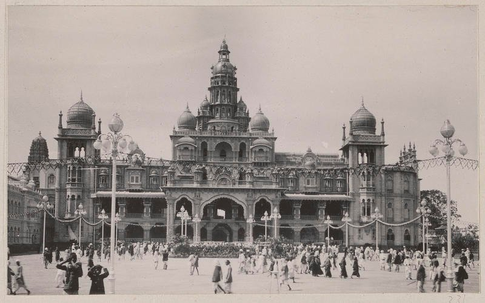

The Mysore Palace, also known as Amba Vilas Palace, is a historical palace and a royal residence (house). It is located in Mysore, Karnataka. It used to be the official residence of the Wadiyar dynasty and the seat of the Kingdom of Mysore. The palace is in the centre of Mysore, and faces the Chamundi Hills eastward. Mysore is commonly described as the 'City of Palaces', and there are seven palaces including this one. However, the Mysore Palace refers specifically to the one within the new fort.
History
the seven palaces that dot the cityscape of Mysore, this royal edifice is the most splendid one. The palace had its foundation laid way back in the 14th century by the Wodeyars or Wadiyars, the royal family of Mysore. It is believed that Yaduraya Wodeyar, the first ruler of the Mysore Kingdom, built a palace in Puragiri aka the Old Fort during his reign. This palace, which is believed to be the predecessor of the current palace, has been demolished and reconstructed multiple times over a period of six centuries.
Initially, the palace was a wooden fortress which was struck by lightning in 1638 and reconstructed under the rein of Kantirava Narasa Raja Wodeyar. In 1793 AD, when Tipu Sultan took over the Wodeyar Dynasty, he demolished the palace and rebuilt it. In 1799, soon after the death of Tipu Sultan, the palace came under Krishnaraja Wodeyar III, who redesigned the palace as per the Hindu architectural style.

Sadly, in 1897, the palace was destroyed by fire during the wedding ceremony of Princess Jayalakshmmanni. Again, Maharani Kempananjammanni Devi and her son Maharaja Krishnaraja Wodeyar IV decided to rebuild the palace. The task of revamping the palace was commissioned to a British architect named Henry Irwin, who designed and completed this palace in 1912, at a whopping cost of over 41 lakh Indian rupees. Further expansions were done and a Public Durbar Hall wing was added to the palace under the reign of Jayachamarajendra Wadiyar during the 1930s.
Architecture
Mysore Palace is built in the Indo-Saracenic style with a touch of Hindu, Mughal, Rajput, and Gothic architectural styles. The three-storied palace along with a 145 feet five-storied tower was built using fine grey granite while deep pink marble was used for the domes. The exterior of this marvelous structure is enriched with two durbar halls, several arches, canopies, columns and bay windows. There is also a sprawling green garden surrounding the palace. The interiors are opulently designed with carved doors, stained glass ceilings, glittering glazed flooring tiles, spectacular Czechoslovakian chandeliers, and works of art from all over the world. All the rooms of the palace are stunningly luxurious and quite appealing.
Above the central arch, there is a divine sculpture of Gajalakshmi-the goddess of wealth with two elephants. In addition to the three entrances, located on the eastern, southern, and western sides, the palace features several secret tunnels. There is also a group of temples at the palace, built from the 14th to the 20th century.